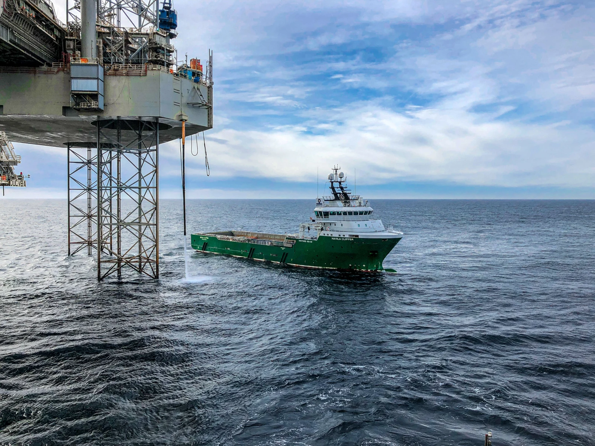

Make every step workable
We start with the real job and the people closest to it. Then we connect the right data, shape the workflow and build a solution that proves its value in practice.
How we deliverStart with the work
We begin with a real workflow and build around what people actually need to do. From inspection to maintenance, VISCO Workbench turns operational context into execution.
Build on your reality
Models, drawings, P&IDs, tag registers and existing systems come together in one visual operational environment. We connect what you already have and make it workable.
Scale what works
Workbench modules are built to be reused, improved and expanded across operations. You start further ahead, while staying close to the engineers and domain experts behind the platform.
Getting started
One path to execution



-
01
Start with one workflow
Choose the first real task, module and success measure with the people doing the work.
-
02
Connect the operational context
Bring models, drawings, documents, systems and live data together in one environment.
-
03
Put Workbench on the job
Go live on the real workflow, using the device and interface that fit the task.
-
04
Prove the operational value
Measure the result against what you agreed at the start.
-
05
Scale what works
Add new modules, workflows or assets while building on the same connected foundation.
Start with the people who know the work.
We work closely with the people who understand the workflow best, so we can choose the right place to start.
Bring the data you already have: models, drawings, tag lists and documents. Together, we connect what matters and get to a real working use case faster.
The basics done properly
You get regular product releases, a named VISCO contact from onboarding onwards, and support answered within one working day. Behind it all sits a data quality process assessed by DNV against RP-A204.
You work with engineers from the first meeting.
Visco has worked in industrial visualisation since 1993. Our 100+ people across 14 offices in 7 countries include developers, 3D specialists, UX designers, testers and data and integration specialists. The people you talk to understand both the software and the asset.
What changed in the field.
-
13.5 h → 50 min
An inspection task covering 49 valves, estimated at 13.5 hours in SAP. Senior Inspection Engineer, ConocoPhillips
-
13.5 h → 50 min
Finding the position of a subsea valve. HW Lead, Shell
-
30 min → under 3 min
A routine task, done in the dynamic digital twin. Area Authority, BP
Bring us the challenge. We’ll build the flow.
Tell us about one task your teams do today. One of our engineers will show you how it runs in Visco Workbench.
Talk to an engineer